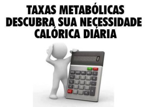

ESTE DOCUMENTO NÃO SUBSTITUI A CONSULTA À UM PROFISSIONAL DE NUTRIÇÃO
Como montar uma dieta usando a Taxa Metabólica Basal

Bem, todos sabemos que para ganhar massa temos que consumir mais energia do que gastamos, e para perder temos que fazer o inverso.
Usualmente as dietas trabalham com um excesso ou deficit de 300 a 1000kcal sobre a quantidade total de energia necessária pelo nosso corpo. A organização mundial de saúde diz que um adulto normal(lei sedentário) precisa de 2500kcals por dia, este é o valor que você encontra na maioria dos alimentos, naquela tabela onde se lê Valores Diários(VD), essa calorias são dividias em Proteínas, Carboidratos e Lipidios e ele recomendam uma certa quantidade de cada nutriente.
É lógico que esse valor não atende a todas as pessoas, esportistas de elite chegam a consumir 12.000kcals pra praticar esportes como natação, corrida ou ginástica. Para calcular de maneira melhor essa quantidade de energia que nosso corpo precisa é utilizada a TMB(Taxa Metabólica Basal), ela basicamente usa seus dados de peso, idade e altura para estimar quanto uma pessoa sedentária precisa por dia pra se manter viva. Depois multiplicamos a TMB por um fator de atividade física para termos o valor total de Kcal.
1º PASSO – Calculando minha TMB
Vc pode ler abaixo se quiser entender como o cálculo é feito e o que ele leva em consideração para estimar o gasto de enérgia diário, mas pra simplificar as contas eu uso esse programa que já dá os valores, se usar o link já pule para o passo 3: http://www.gyplan.com/pt/calorie_pt.html (ou use algum aplicativo ou site que achar melhor)
- Para quem quiser calcular manualmente, estes são os dados usados para obter essa aproximação:
Para Homens: TMB = 66 + (13.7 x peso em kg*) + (5 x altura em cm) – (6.8 x idade em anos)
Para mulheres: TMB = 655 + (9.6 x peso em kg*) + (1.7 altura em cm) – (4.7 x idade em anos)
*OBS: o peso em quilos de preferencia deve ser calculado em cima da massa magra que é tirado em avaliações físicas
{kind=link}
2º PASSO – Calculando Meu nível de atividade(apenas trabalho, faculdade, lazer, não incluir gastos de atividades físicas)
1.0 – Sedentário
1.2 – Super levemente ativo
1.4 – Levemente ativo
1.6 – Moderadamente ativo
1.8 – Altamente ativo
2.0 – Extremamente ativo
Ser sedentário significa que você não faz nada o dia todo (assiste TV e dorme o dia inteiro)
Ser super levemente ativo significa que você não faz nenhuma atividade física. Você trabalha no
escritório, no computador, e não faz nenhum tipo de atividade física durante o dia.
Ser levemente ativo significa que você tem um trabalho que não necessita de esforço físico (escritório, escrivaninha, etc.) mas faz algum tipo de atividade física durante o dia, por exemplo, caminhada, mas nada pesado.
Por moderadamente ativo nós queremos dizer que você tem um trabalho que não necessita de esforço físico (escritório, escrivaninha, etc.), faz uma atividade física durante o dia e um treino diário na sua rotina. Aqui é onde a maioria de vocês está.
Por altamente ativo nós queremos dizer que ou você treina e faz um trabalho que exige esforço físico, ou tem um trabalho sem esforço físico e treina duas vezes por dia.
Por extremamente ativo nós queremos dizer que você tem um trabalho bem duro que exige bastante esforço físico e ainda treina.
3º PASSO – Divisão da dieta
Bem, de posse da sua TMB e de sua meta(cresce, definir ou manter), você irar somar ou subtrair a sua TMB do valor referencia adotado usando seu bom senso.
EXEMPLOS PRÁTICOS:
Se você é pequeno, não aguenta comer muito e quer crescer lentamente e com qualidade coloque um excesso de calorias pequeno, de 300 a 500kcals.
Se você já é grande provavelmente já sabe comer bastante e que ganhar muita massa magra sem se preocupar com o ganho de gordura pode arriscar 1000 a 800kcals.
Se és gordo e nunca fez dieta de restrição, pode começar com um subtração de 300kcals e ir subtraindo mais com o tempo quando for se acostumando.
Então temos a quantidade de energia na dieta será = TMB + — META
Pronto chegamos a um valor que devemos ingerir diariamente, mas isso por si só não basta, não pense que porque sua meta é 5000kcals, vc pode tomar 1L de óleo de soja e estará tudo bem. É preciso dividir essa energia entre CARBOIDRATO + PROTEÍNA + LÍPIDOS
Dividindo as kcals:
Essa divisão não é precisa, cada corpo reage de uma forma, você deve se conhecer e ir adaptando a dieta para ti.
Em BULK, como eu sou endomorfo(engordo fácil) eu uso a divisão 40:40:20, ou seja 40% de Proteinas, 40% de carboidratos e 20% de gorduras. Tenho colegas que usam 60:30:10 ou 60:25:15
Em CUTT, eu uso 30:60:10,
Depois de escolher essa divisão, você vai dividir isso entre sua refeições diárias, como o recomendado é alimentar-se de 3 em 3 horas, isso vai dar entre 6 e 7 refeições por dia. Claro que a divisão não precisa ser igual, é normal que o almoço tenha mais calorias que as demais refeições, em bulk pode comer muito em todas, mas em cutt é bom reduzir as quantidades a noite e elevar pela manhã.
4º PASSO – Montagem da dieta
Agora você vai pegar uma dieta pronta na internet, modificar conforme sua rotina e adaptar nesses padrões ou escrever sua dieta atual e ir modificando até chegar num valor..
Eu faço assim:
1- Abro uma planilha no Excel
2- Coloco as 7 refeições(não esquecer do pós e pré treino)
3- Numa coluna coloco a quantidade de kcals por porção
4- Nas proximas 3 colunas coloco as quantidades de proteina, carbo e gorduras(uso o rótulo ou a internet para achar essas informações)
6 – Depois coloco a soma dos nutrientes e calorias daquela refeição e no final da tabela coloco a soma total.
Exemplo de uma dieta VEGAN que fiz a alguns anos:

Pode observar que as quantidades de proteinas e carboidratos são praticamentes iguais e que os lipidos estão bem reduzidos, isso ai no meu caso era um bulk que fiz no inicio dos meus treinos, como sou enomorfo nunca fui de exagerar nos carboidratos e gorduras.
Abraço!
Fontes: Wikipédia e fóruns de musculação.
Por: Paulo Victor Pinheiro